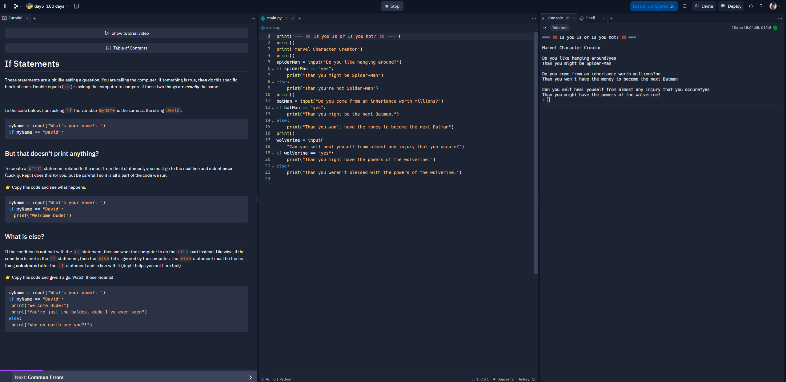

Day 5 Challenge
Day 5 Solution
In this challenge we learned about if statements. This was my first time learning a programming language, so learning how, "if and only if" statements worked was very interesting. I also learned about the modulo operator, which is a very useful tool
calculating the remainder when dividing two numbers. Understanding how to use if statements is very important for programming, and I'm glad I learned how to use them. Now we can
utilize emergence and complexity.
- if spiderMan == "yes":
print("Than you might be Spider-Man")
else:
print("Than you're not Spider-Man")
- if spiderMan == "yes" and superman == "yes":
- if batMan == "yes":
print("Than you might be the next Batman.")
else:
print("Than you won't have the money to become the next Batman")
- if wolVerine == "yes":
print("Than you might have the powers of the wolverine!")
else:
print("Than you weren't blessed with the powers of the wolverine.")
